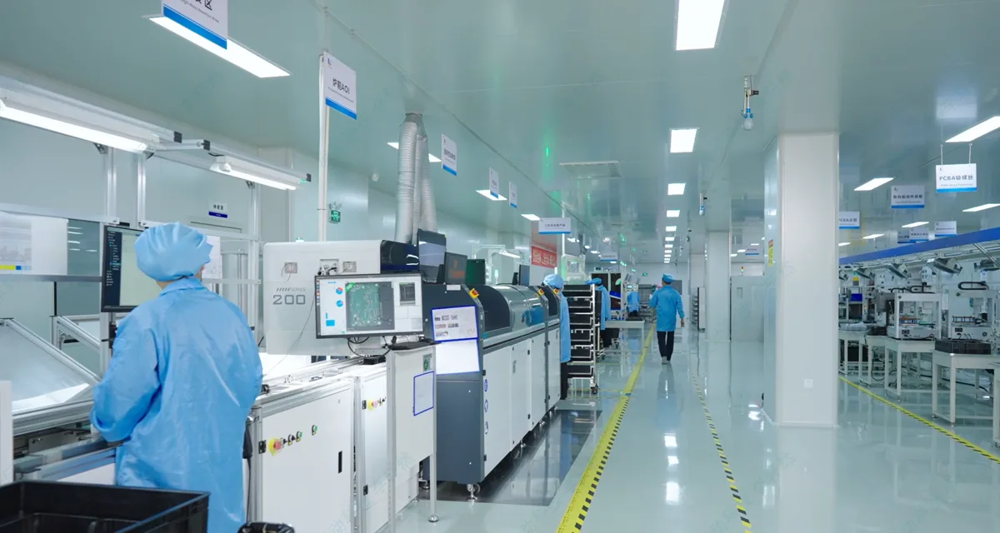
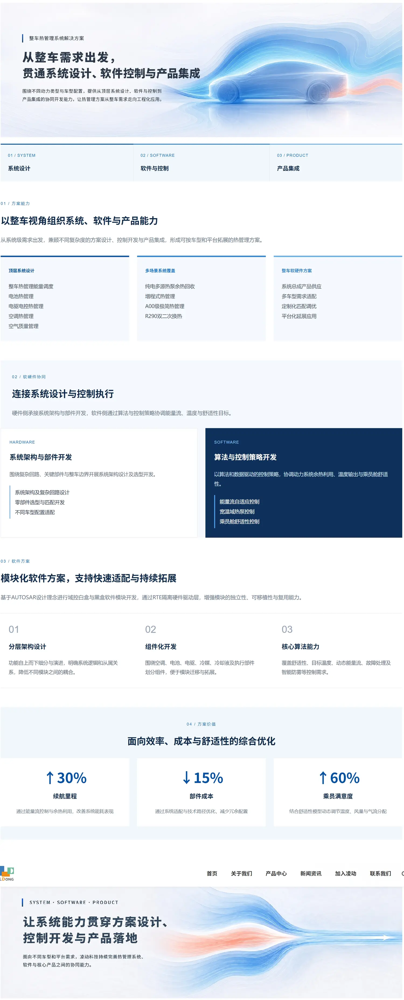

05 / MANUFACTURING & TECHNOLOGY
凌动科技
制造与技术传播
把专业信息和制造现场，变成可理解的企业内容。
围绕新能源汽车热管理，我参与产品页面的内容整理与呈现，也通过真实产线影像进入制造现场。两种表达指向同一件事：让读者看清企业能做什么、这些能力如何落到具体工作中。


01 / TECHNICAL TRANSLATION
让产品信息，
先有清楚的阅读路径
技术信息不是列得越多越容易理解。在官网产品内容中，我从使用场景、系统能力和具体产品三个层级梳理信息，让读者能先找到与自己有关的问题，再进入功能与细节。
01从需求进入
先说明产品要回应什么使用场景，而不是直接堆砌型号。
02解释系统关系
交代各部分如何组合，让能力不只停留在一串技术名词里。
03落到页面表达
通过标题、图像与信息层级，把需要进一步了解的内容放回官网。
02 / PRODUCT CONTENT
不同产品，
用合适的方式说明
页面需要兼顾产品定位、功能特点、应用环境和必要参数。以下选取三类实际上线页面，呈现从系统概念到具体零部件的不同信息侧重；完整页面可点击查看。
从控制需求进入，再展开产品形式与功能信息。
把组合能力与应用特点放进同一条阅读线索。
围绕核心零部件的作用、应用与制造质量组织内容。
03 / MANUFACTURING STORYTELLING
让制造现场，
自己提供证据
工厂的生产工序、设备与现场工作比抽象的“制造能力”更具体。企业宣传片与张家港基地的现场影像，分别呈现完整叙事和具体的作业画面。
01 / CORPORATE FILM
凌动科技企业宣传片
我参与宣传片的脚本建设与拍摄跟进：从企业、产品到制造现场，梳理内容顺序与解说重点，并跟进现场画面的采集。
脚本建设 / 拍摄跟进04 / REFLECTION
先理解技术与现场，
再决定怎么讲
产品页面要回答“这是什么、解决什么问题”；现场影像则让制造过程获得可见的依据。面对专业信息，我更愿意先找出读者需要理解的那一层，再决定使用文字、页面还是视频。
企业传播的清晰，
来自对业务的耐心梳理。
WORK INFO
项目与职责
产品信息整理官网内容与页面呈现技术内容转译制造影像内容协同
- COMPANY
- 凌动科技
- FOCUS
- 产品与制造传播